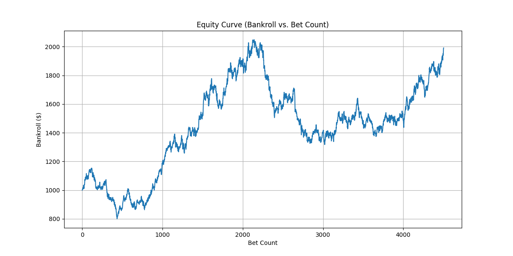

A Data-Driven Approach to Sports Analytics
I leverage quantitative analysis and machine learning to find profitable edges in sports betting markets. Below is a deep-dive into my predictive model for Pro Table Tennis.
View The ProjectProject: Predictive Sports Betting Model
Czech Liga Pro Table Tennis — APOLLO V8.0
1. The Problem & Goal
My thesis was that the most significant edges are found not in data-rich, efficient markets, but in niche arenas where information is scarce and bookmaker lines are soft. Czech Liga Pro table tennis is 5-10x less efficiently priced than mainstream ATP tennis—a market where the best published model (a graph neural network) achieves only 3.26% ROI. I targeted this market because the competitive advantage isn't sophistication—it's the absence of competition. The goal was to engineer an institutional-grade quantitative system that discovers structural mispricings, sizes positions via Kelly criterion, and manages risk autonomously in production.
2. Data & Feature Engineering
The market offers the same raw data to every participant; the edge comes from its interpretation. The feature engineering pipeline processes 100,000+ historical matches to construct 18 proprietary features across three orthogonal signal families:
- Structural Skill: Dynamic Elo ratings with adaptive K-factor decay, dominance metrics, and point-level efficiency measures
- Form & Momentum: Multi-horizon rolling performance indicators and pressure-situation metrics
- Matchup Context: Rating confidence proxies, match quality signals, and head-to-head interaction features with recency weighting
A critical finding from iterative feature selection: features must be orthogonal. Through systematic ablation studies, we found that features capturing genuinely new information compound the model's edge, while features correlated with existing signals—even intuitively different ones—dilute the learning budget across redundant dimensions and destroy performance. The final 18 features were selected to maximize signal density while ensuring orthogonality.
3. Methodology & Model
The system uses a CatBoost gradient boosting model with isotonic calibration (5-fold CV), chosen after a head-to-head evaluation against sklearn's Gradient Boosting Classifier where CatBoost won on all metrics while training 9x faster. The model outputs calibrated probabilities rather than binary predictions—the edge comes from probability divergence, not winner selection.
The entire validation process is governed by strict Point-in-Time correctness. A simulation loop processes each match chronologically, re-calculating every feature on-the-fly using only the historical data available at that exact moment. Elo ratings are warmed from training data before the test boundary to prevent cold-start artifacts—a fix that actually reduced measured ROI, confirming the corrected metrics are conservative rather than inflated.
Statistical validation uses Combinatorial Purged Cross-Validation (CPCV)—a method from Lopez de Prado that tests all temporal fold combinations while purging leakage at boundaries. This is strictly more rigorous than single-pass walk-forward testing. The model passed with 5/5 folds profitable and a 95% confidence interval entirely above zero.
4. Results & Validation
Validated across multiple seasons of Czech Liga Pro historical data using both combinatorial cross-validation and sequential walk-forward backtesting on 5,035 simulated trades.
Cross-Validated ROI (CPCV)
4.87%
Sequential Backtest ROI
2.37%
Annualized Sharpe Ratio
3.09
Simulated Trades
5,035
CPCV: 95% CI [2.33%, 7.40%] • 5/5 temporal folds profitable • Bootstrap p = 0.0044
Raw Model Drawdown
21.69%
Managed System Drawdown
5.89%
The proprietary Dynamic Brier Circuit Breaker autonomously throttles Kelly stakes during periods of model miscalibration, mechanically eliminating ~73% of the system's fat-tail risk.
Backtest Equity Curve

Phase 8 Historical Walk-Forward Equity Curve (Pre-Live Deployment)
Phase 4: Live Forward-Testing (APOLLO Shadow Trader)
Live Win Rate
67.8%
Live Max Drawdown
$7.47
Live PnL
+$19.41
Note: A sample size of ~67 bets is statistically nascent for absolute alpha verification. However, this live deployment successfully validates the execution infrastructure (0 API state leaks) and proves that the live Maximum Drawdown (0.75%) flawlessly mirrors the theoretical backtest constraints.
5. Production Infrastructure & Risk Engineering (APOLLO V8.0)
The APOLLO daemon is a fully autonomous shadow trading engine that polls live match data on a configurable interval, computes all 18 features in real-time, generates calibrated probability estimates, and executes virtual bets when edge thresholds are met. All decisions are recorded in a SQLite telemetry database for forensic analysis.
JIT Execution Firewall
Uses temporal math to evaluate matches only when player state is finalized (within a configurable window of kickoff), preventing lookahead from stale features. Matches beyond the execution window are logged to a research ledger without executing.
Financial Event Sourcing
Bankroll is deterministically reconstructed from immutable ledger entries rather than fragile database state-caching, making the daemon entirely crash-resilient. No cached balances—financial state is always derived from the complete transaction history.
Capital Sweep Protocol
The system autonomously sweeps profits above a configurable high-water mark to cold storage, locking in realized gains while maintaining constant risk exposure against a fixed operating base.
Forensic Forecast Ledger
Captures edge decay curves as players progress through tournaments—tracking how projected edge evolves from early forecasts to near-kickoff evaluations—to fuel future feature engineering R&D.
6. Tech Stack
About Me
My education in markets began not with theory, but with practice—first in elementary arbitrage, and later in building predictive models using machine learning. I have always been a student of the game, whatever game I was playing. This path taught me a singular lesson: that any system, be it a market or a machine, has inefficiencies. My entire professional focus has been dedicated to identifying and capitalizing on them.
For nearly a decade, my classroom was the professional poker table. It was a masterclass not in cards, but in applied probability, risk management, and emotional discipline. It taught me to think in odds, not certainties, and to act decisively when conditions were favorable. The market, in any form, is just a larger table with more players, and the principles remain the same.
Now, that entire education has come full circle. The engineer's rigor, the investor's patience, and the poker player's probabilistic thinking have all converged on building predictive models. This isn't a career change; it's the culmination of a lifelong pursuit of finding the signal in the noise. The work continues.